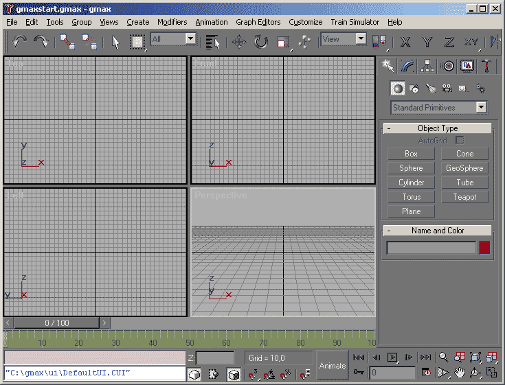

L'interface de gmax
L'interface de gmax est très proche de celle de 3DStudio Max. De nombreux livres sur ce logiciel seront donc tout à fait utiles
pour maîtriser gmax.
Toutefois voici les commandes qui seront les plus utiles à la création d'add-ons pour MSTS.
Tout d'abord, un aperçu rapide de la fenêtre de gmax. L'écran principal se divise en 4 vues que l'on pourra configurer comme on le voudra.
Il y a une barre de menus, une barre d'outils horizontale et un grand panneau de commande vertical sur la droite. On trouve enfin un autre groupe
de boutons gérant l'affichage et les animations en bas à droite de l'écran.
Cette interface peut sembler aussi déroutante que le pupître d'un 747. C'est pourquoi, il convient d'aborder chaque point pas à pas. Et vous verrez que c'est finalement assez simple.

Eléments d'interface
Barre des menus
Barre d'outils (Main Toolbar)
Panneaux de commande (Command Panel)
Snaps